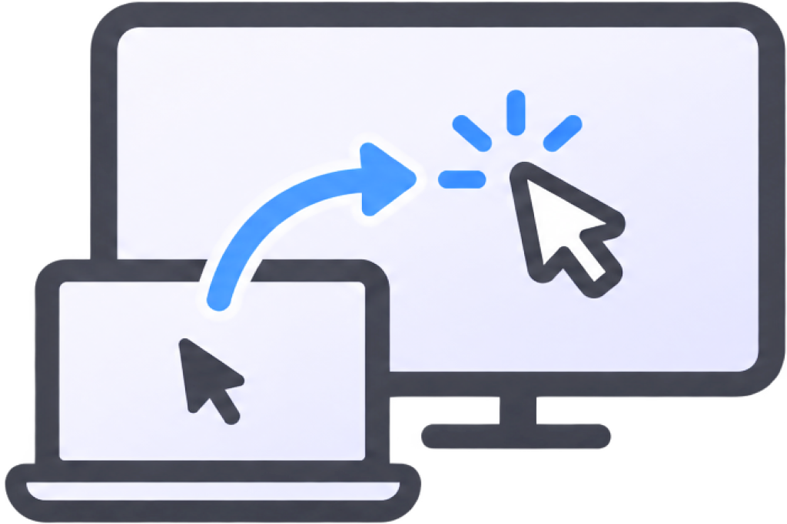

NearHub Cast
Welcome to cast screen
Mirror your screen to a nearby display.

Select a display
Scanning for nearby displays…
Sharing to NearCast
Receiver is ready for casting.
Allow Remote Control
Waiting for the receiver’s remote-control status.
Share System Audio
Takes effect when sharing starts. Microphone audio is excluded.
Session Preview
开始分享后可预览采集画面。
LOCAL PREVIEW
反控未启用
反控需要双方启用；整屏分享在屏幕识别成功后支持反控，窗口仅投屏。
反控收包诊断
滚轮诊断版 · 保持原有滚动倍率；测试后点击“导出诊断”。
Cast Settings
Choose your display language. Changes apply immediately.
Quality Settings
Fixed · 1920 × 1080 · 12 MbpsTakes effect when sharing starts
Allow Remote Control
Allow the display to control this computer when remote control is enabled.
Share System Audio
分享系统声音，下次开始分享时生效；不采集麦克风。
Local Network Casting
开启时仅连接所选设备的本地服务；关闭后使用云端协商。下次连接生效。
Advanced Input Settings 输入转换与手势
蓄力 可拖拽 右键等待 松手右键 松手确认
轻点点击；直接滑动滚动；光圈变绿后移动可拖拽。捏合后松手不触发右键。
正在读取本机输入能力…
应用时会释放当前输入并重新协商；接收端可能需要重新开启反控。设置保存在本机。
画质与声音在下次分享时生效；反控开关立即生效。
启动后自动检查更新。
Current Version
—Update Version